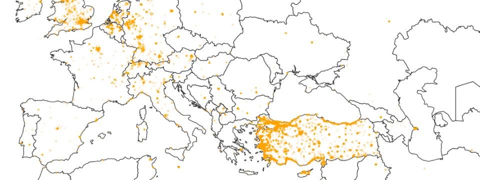

Geography and Ideology
Distribution of Twitter users in USA, colored by ideology

The US Congress on Twitter
Network of following links of Senators and Representatives

Timeline of the 2012 Election on Twitter
Number of tweets mentioning Obama or Romney, per day

Tweets in the Aftermath of the Newtown Tragedy

Tweets in the first day of the Turkish protest
90% of all geolocated tweets were sent from Turkey